بخش دوم این مطلب رو میتونید از این لینک بخونید.چند روز پیش در توییتر لیستی رو با عنوان «لیستی از اهالی فارسیزبان آیتی توییتر» دیدم. هیچی دیگه، اون رگ تپهنوردیم زد بالا 🙂 البته من در لیست «لیستی از اهالی فارسیزبان آیتی توییتر» نیستم ولی «لیستی از اهالی فارسیزبان آیتی توییتر» رو دوست دارم :)در حال حاضر تعداد اعضای این لیست ۷۲۰ نفره ولی مرتب داره کم و زیاد میشه. بعضی از اکانت ها private بودند و نتونستم توییت هاشون رو ذخیره کنم. بعضی از اکانت ها هم یه دفعه تصمیم میگرفتند که private کنند! بعضی از اکانت ها هم بودند که تعداد ۰ توییت نوشته بودند ولی در این لیست حضور داشتند! در نتیجه، کلا توییت های ۶۱۷ اکانت رو ذخیره کردم. برای کاری که من میخوام انجام بدم جامعه آماری خوبیه و کفایت میکنه.
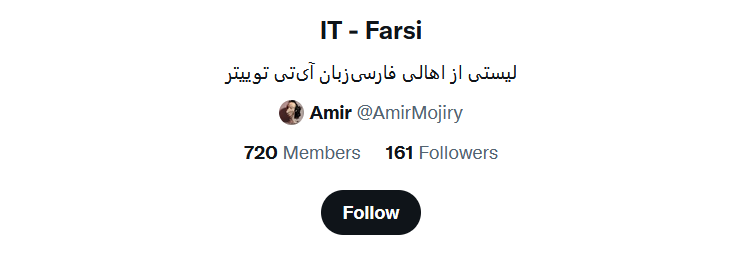
حالا چیکار میخوام انجام بدم؟ میخوام توییت هایی که اعضای این لیست مینویسند رو ذخیره و بررسی کنم و یکسری اطلاعات ازشون استخراج کنم. برای این منظور از Tweepy و API توییتر استفاده کردم. اینجا نمیخوام وارد بحث کد و این داستان ها بشم. در اینجا فقط میخوام نتایج رو به سمع و نظر شما برسونم 🙂تعداد کل توییت های مورد استفاده در این تحلیل چندتاست؟با توجه به محدودیت API توییتر، من فقط ۳۲۰۰ توییت آخر هر یک از اعضای لیست رو ذخیره کردم. البته بعضی ها کمتر از ۳۲۰۰ توییت نوشته بودند. مجموع تعداد توییت هایی که ذخیره کردم ۱,۴۱۶,۳۵۲ است. حجم اطلاعات هم ۲.۶۳ گیگابایت است.اعضای این لیست در چه ساعتی از شبانهروز بیشترین توییت را نوشتهاند؟هیستوگرام زیر نمودار تعداد توییت هایی که در ساعات مختلف شبانهروز نوشته شده رو نشون میده. حدودا میشه فهمید بیشترین فعالیت از ساعت ۹ تا ۱۲ شب و کمترین فعالیت از ساعت ۲ شب تا ۸ صبح بوده.
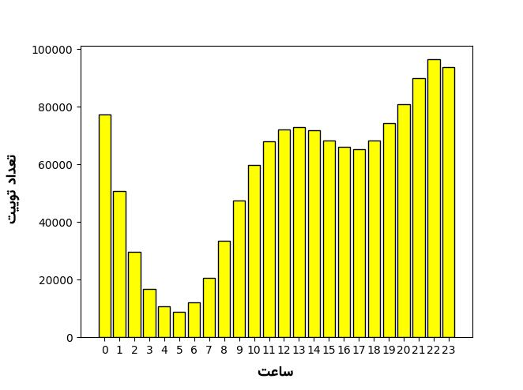
میزان فعالیت اعضای این لیست در روز های مختلف هفته چگونه است؟هیتمپ زیر فعالیت اعضا در روز های مختلف هفته و ساعات مختلف شبانهروز نشون میده.
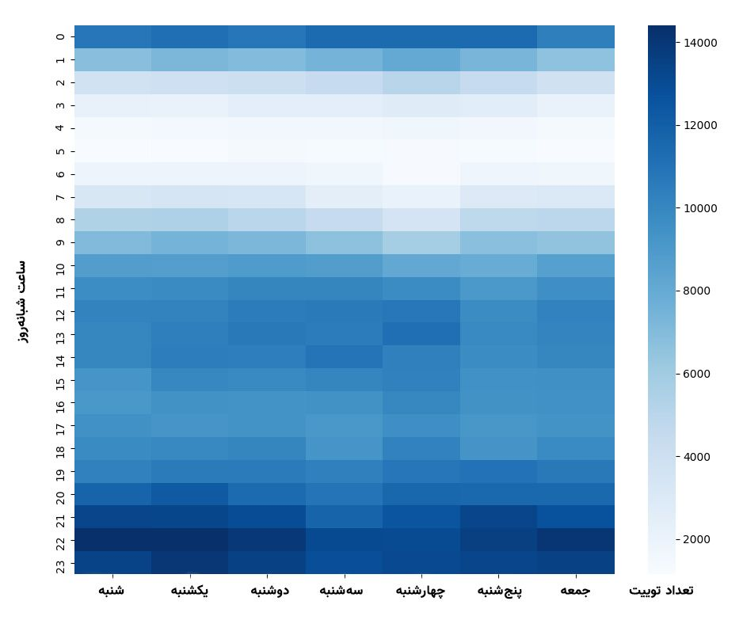
ابر کلمات توییت هاتصویر زیر ابر کلمات توییت هایی است که اعضای این لیست نوشتهاند :
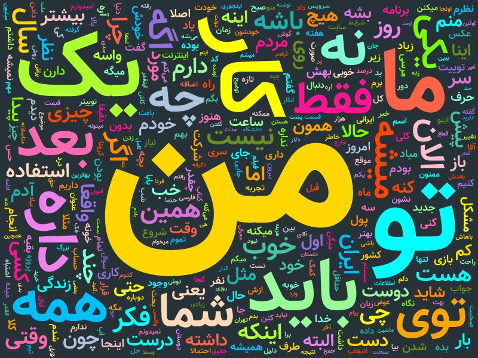
تصویر بالا برای زمانی است که چیزی رو حذف نکنیم. اگر Stop Word ها رو حذف کنیم نتیجه به صورت زیر میشه :
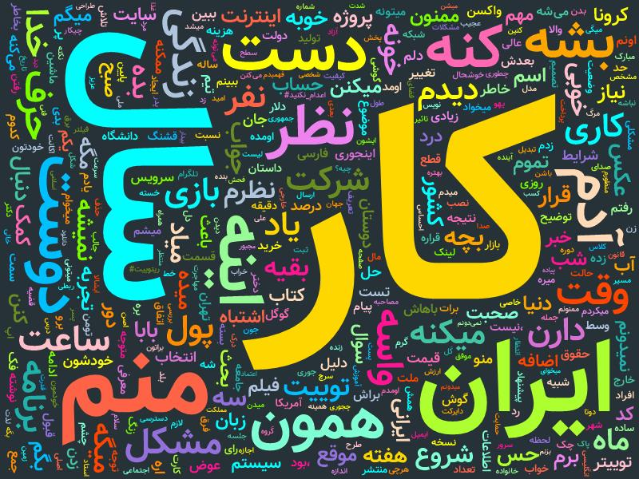
لیست Stop Word ها رو از دو لینک زیر گرفتم :
نحوه تولید ابر کلمات نیز به این صورت است که ابتدا کلمات پرتکرار را استخراج کردم، سپس با استفاده از سرویس زیر (به دلیل استایل بسیار زیبایی که دارد) آن را تولید کردم :
نسبت تعداد توییت، ریتوییت و ریپلای ها چگونه است؟
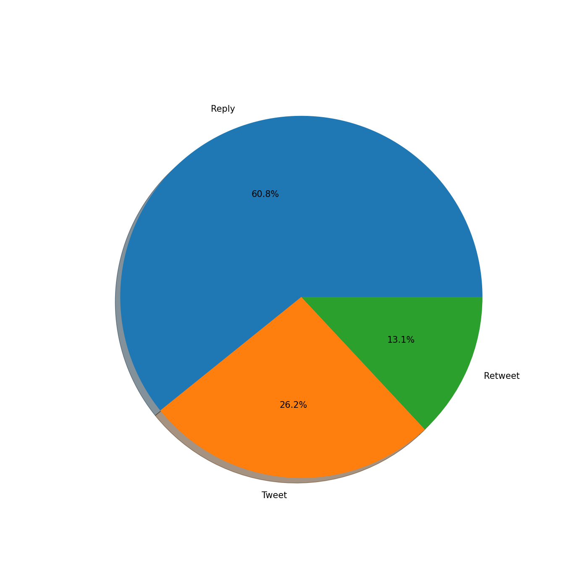
اعضای این لیست بیشتر از چه راهی (وب، اندروید، ios) توییت ها را نوشتهاند؟
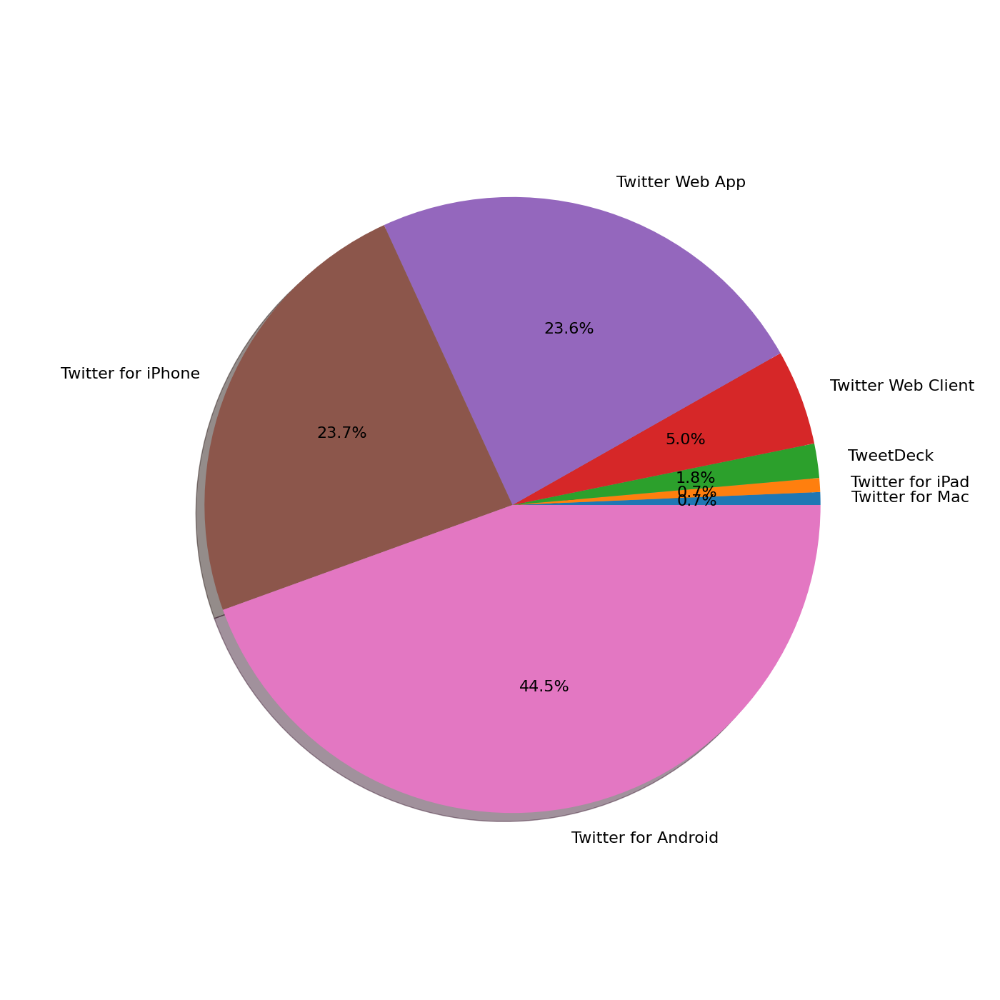
البته نمودار کامل خیلی شلوغ تر از این حرفاست! با توجه به اینکه با جماعت برنامهنویس سر و کار داریم، خیلی چیز عجیبی نیست که خود شخص یه کلاینت برای توییتر بنویسه و با اون توییت بزنه! دیتا کامل رو دراین لینک قرار دادم.چه کسی بیشترین ریپلای را از اعضای لیست دریافت کرده است؟این لیست خیلی طولانی بود و من در نمودار زیر فقط ۳۰ نفر اول رو که بیشترین ریپلای رو دریافت کرده بودند آوردم :
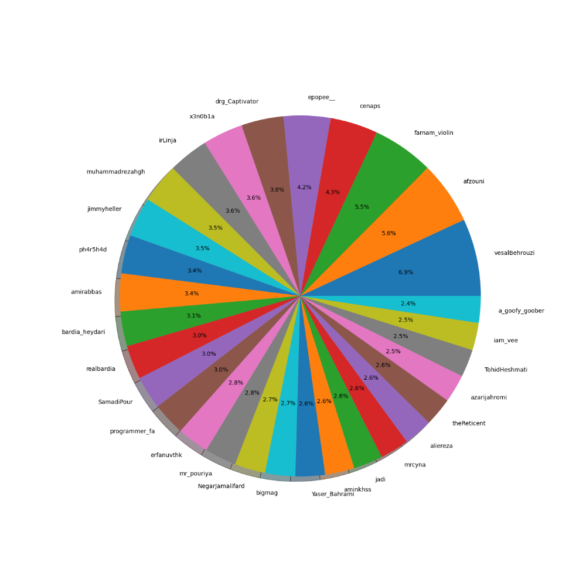
لیست زیر همین نمودار بالاست که مقابل یوزرنیم هر فرد تعداد ریپلای ها رو نوشتم :
دیتا کامل رو در این لینک قرار دادم.اعضای لیست توییت های چه کسی را بیشتر از بقیه ریتوییت کردهاند؟
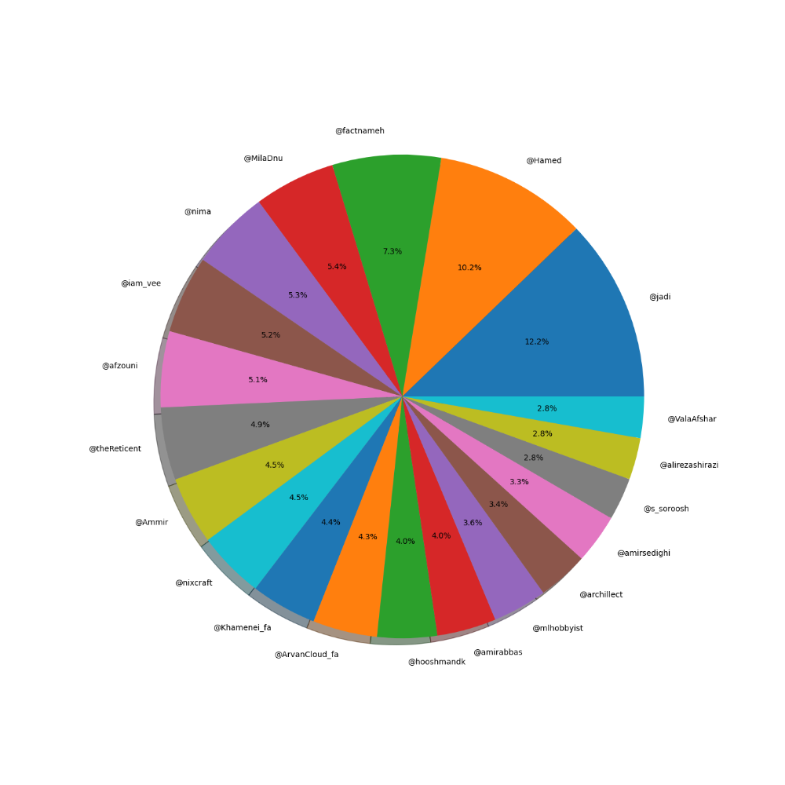
لیست زیر همین نمودار بالاست که مقابل یوزرنیم هر فرد تعداد ریتوییت ها رو نوشتم :
دیتا کامل رو در این لینک قرار دادم.اعضای لیست کدام ایموجی را از همه بیشتر استفاده کردهاند؟
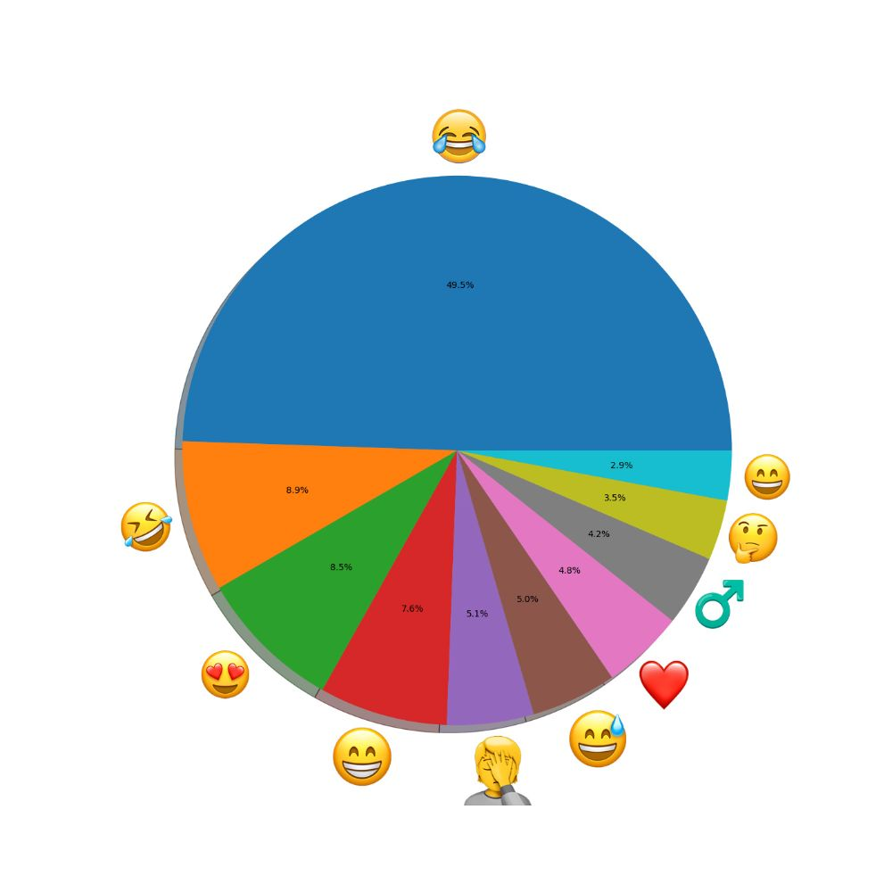
دیتا کامل رو در این لینک قرار دادم.چند درصد از توییت ها شامل عکس و ویدئو بودهاند؟
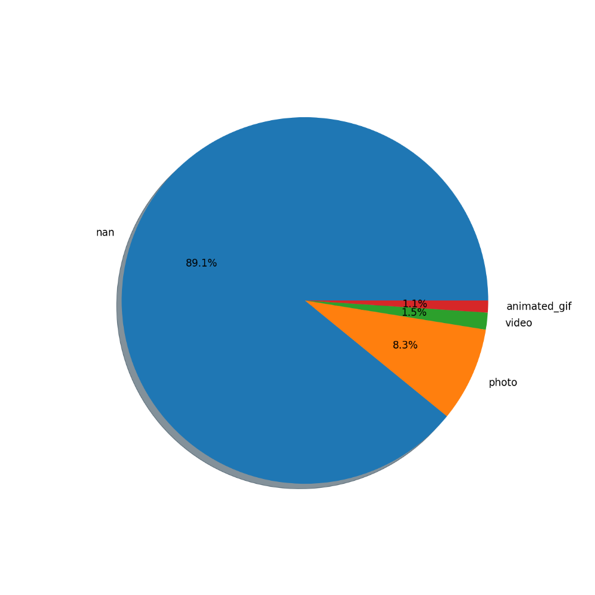
کدام تصاویر بیشتر از بقیه مورد استفاده قرار گرفتند؟
nb.neighbours()
| title | date | |
|---|---|---|
| prev | کنکور و بازی با احتمالات؟! | ۱۴۰۰/۰۸ |
| next | مروری بر اِکس در توییتر فارسی | ۱۴۰۰/۰۸ |